Lei Gao
Lecturer (Assistant Professor)
Department of Computer Science, University College London
I am a Lecturer (Assistant Professor) in the Department of Computer Science at University College London (UCL). I am also a member of the Multi-Sensory Devices (MSD) Group and the UCL Interaction Centre (UCLIC).
Prior to my current appointment, I was a Postdoctoral Research Fellow at UCL, where I also obtained my PhD in Computer Science in 2024, supervised by Prof. Sriram Subramanian and Prof. Diego Martinez Plasencia. I received my Master's degree in Engineering from Xidian University and my Bachelor's degree in Engineering from Shandong University.
My research focuses on the computational design of physical interactive systems, integrating algorithmic methods, physical actuation mechanisms, and multisensory interaction. I am particularly interested in developing programmable physical interfaces that enable new forms of tangible, embodied, and intelligent interaction. My work on acoustic levitation exemplifies this vision, using computational methods and ultrasonic fields to enable contactless object manipulation, fabrication, and multisensory and haptic interaction.
Google Scholar | LinkedIn | Twitter
Email: lei.g@ucl.ac.uk
Curriculum Vitae
Latest News
- April 2026: I presented our AAC paper, a closed-loop acoustic actor-critic framework for tangible display at CHI 2026.
- March 2026: A co-organized workshop Beyond Interfaces: the Future of Edible Interactions was accepted at DIS 2026.
- June 2025: SONARIOS paper got the Best Paper Award at DIS 2025 !
- Feb 2025: I got an Early Career Mini-Fellowship from the CS department at UCL !
- December 2 2024: I offically started as a research fellow in UCL, new adventures ahead !
- November 18 2024: I got my PhD award and my thesis was online ! "Designing and Prototyping Applications Using Acoustophoretic Interfaces".
- October 18 2024: I successfully defended my PhD thesis and deeply appreciated my thesis committee members Mike Fraser and Elia Gatti for their insightful feedback and valuable discussions. Also, huge thanks to my amazing supervisors Sriram Subramanian and Diego Martinez Plasencia for supporting and encourging me during this journey !
Publications
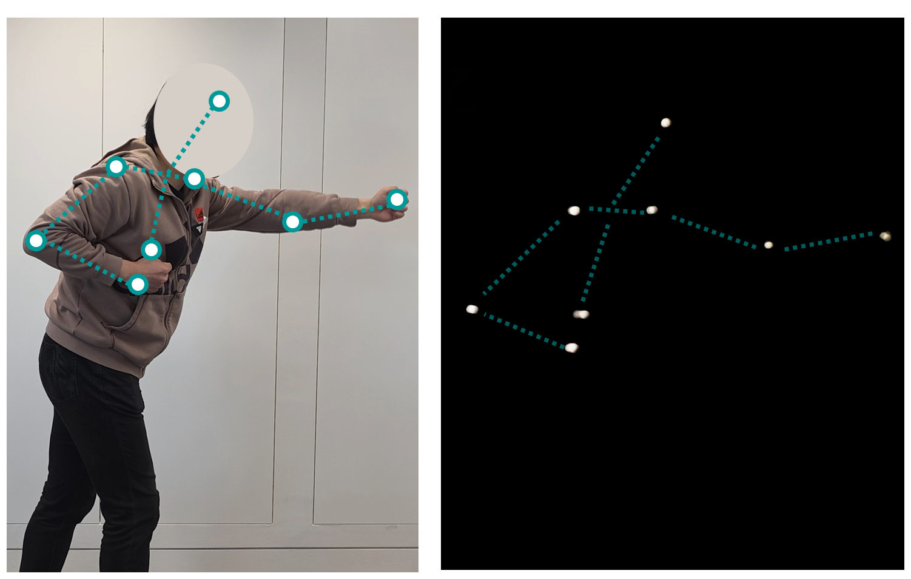
AAC: An Acoustic Actor-Critic Trajectory Planning and Correction System for Stable Multi-Particle Levitation Displays
ACM CHI Conference on Human Factors in Computing Systems (CHI 2026)
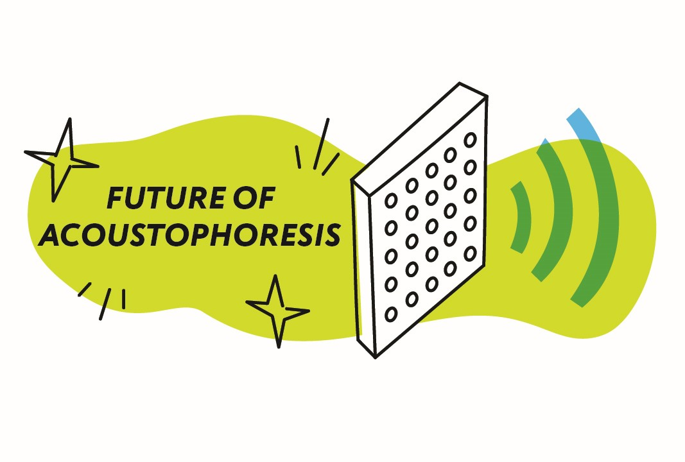
SONARIOS: A Design Futuring-Driven Exploration of Acoustophoresis
ACM Designing Interactive Systems Conference (DIS 2025) Best Paper Award
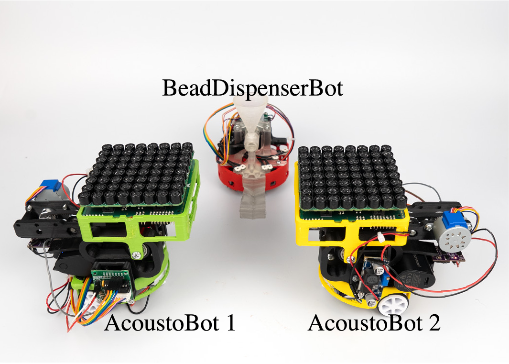
AcoustoBots: A swarm of robots for acoustophoretic multimodal interactions
Frontiers in Robotics and AI , 12, 1537101
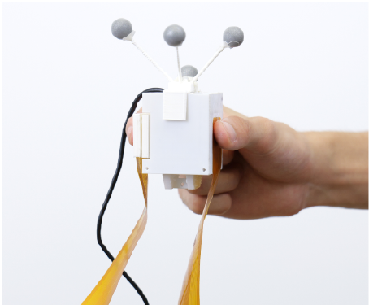
Slip-Grip: An Electrotactile Method to Simulate Weight
ACM CHI Conference on Human Factors in Computing Systems (CHI 2025)
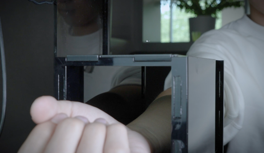
Ultrasound can deliver chemical stimulants to the skin and modulate their perception
Nature Scientific Reports , 15, no. 1(2025): 10297.
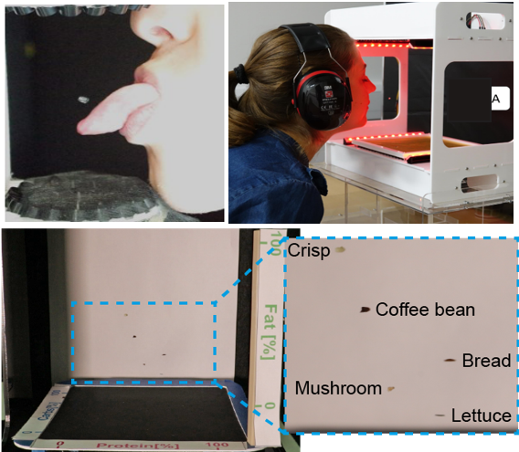
Computational Gastronomy and Eating with Acoustophoresis
Companion Proceedings of the 26th International Conference on Multimodal Interaction (ICMI Companion 2024)
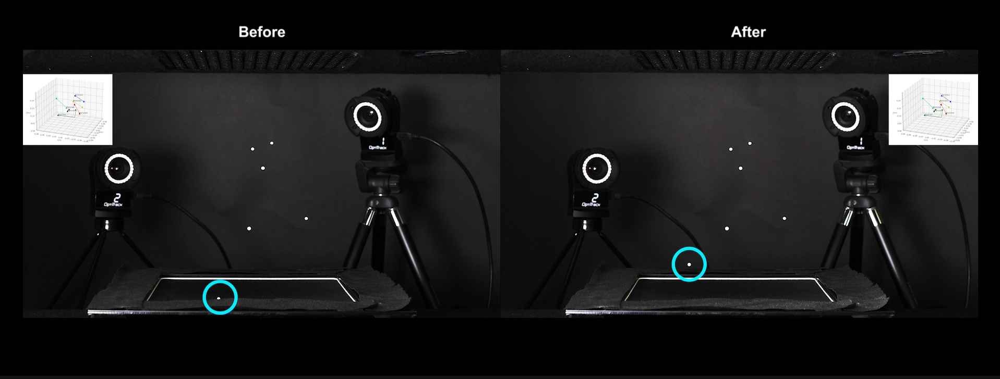
StableLev: Data-Driven Stability Enhancement for Multi-Particle Acoustic Levitation
ACM CHI Conference on Human Factors in Computing Systems (CHI 2024)
Paper | Video | Video preview
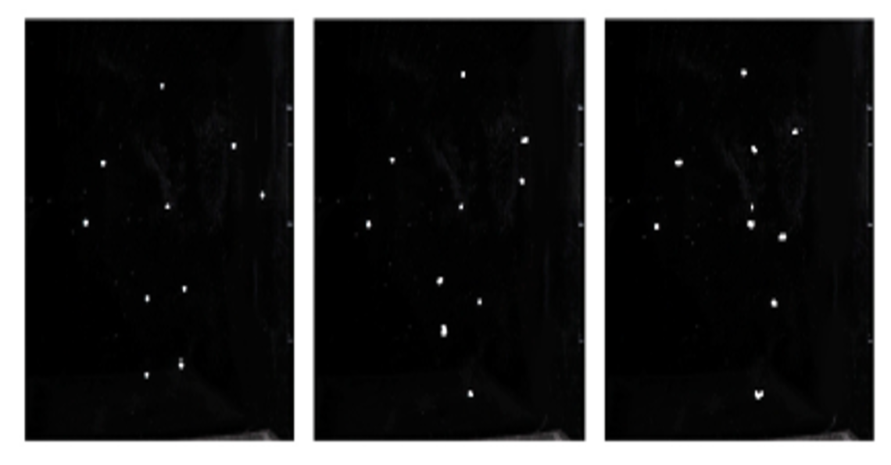
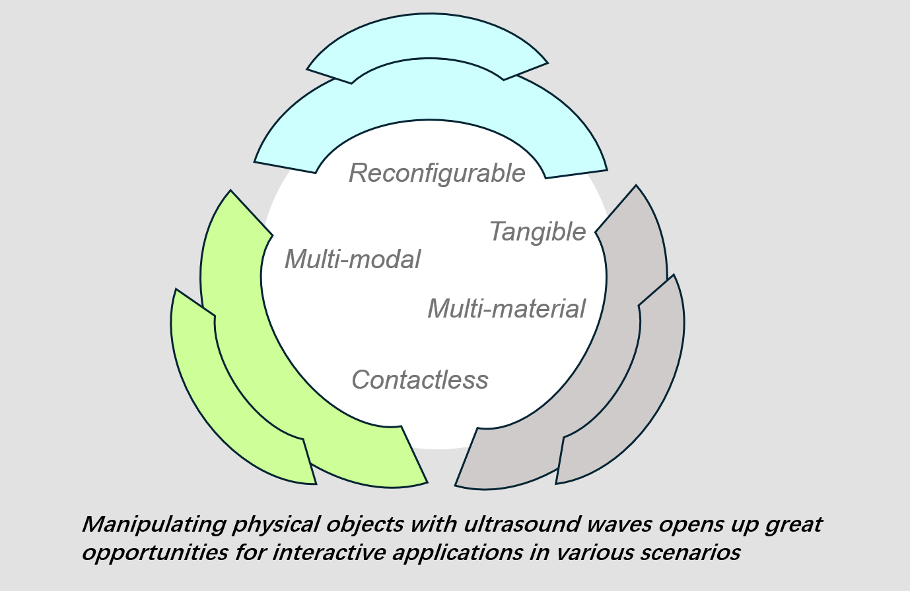
Designing and Prototyping Applications Using Acoustophoretic Interfaces
ACM Extended Abstracts of the CHI Conference on Human Factors in Computing Systems (CHI EA 2024)
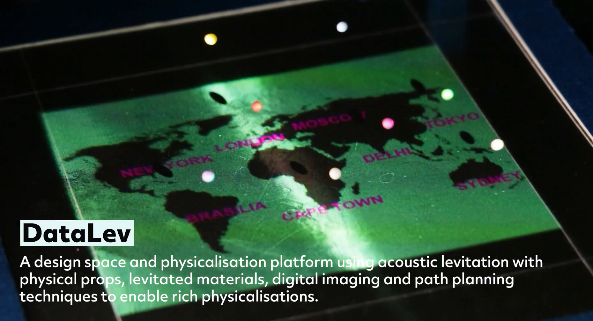
DataLev: Mid-air Data Physicalisation Using Acoustic Levitation
ACM CHI Conference on Human Factors in Computing Systems (CHI 2023)
Paper | Video | Video preview
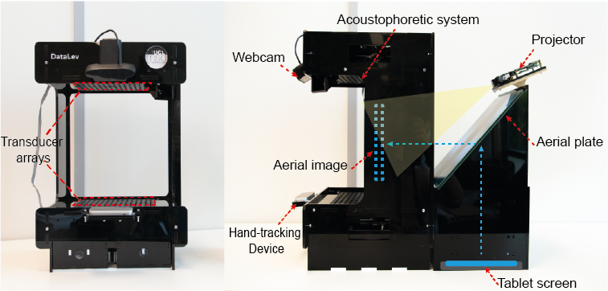
DATALEV: Acoustophoretic Data Physicalisation
ACM UIST Symposium on User Interface Software and Technology (UIST Demo 2022)
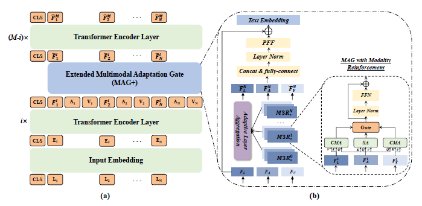
MAG+: AN EXTENDED MULTIMODAL ADAPTATION GATE FOR MULTIMODA SENTIMENT ANALYSIS
IEEE International Conference on Acoustics, Speech and Signal Processing (ICASSP 2022)

Investigating the Effectiveness of Virtual Reality for Culture Learning
International Journal of Human–Computer Interaction, 37:18, 1771-1781, 2021 (IJHCI 2021)
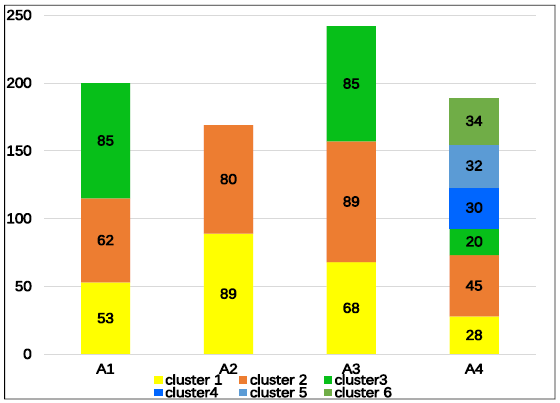
Automatic Clustering of Different Solutions to Programming Assignments in Computing Education
ACM Global Computing Education Conference 2019 (CompEd 2019)